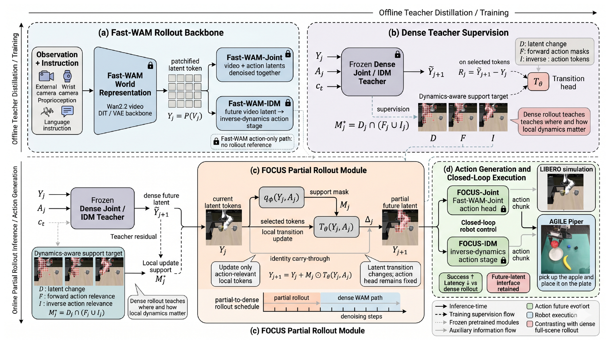
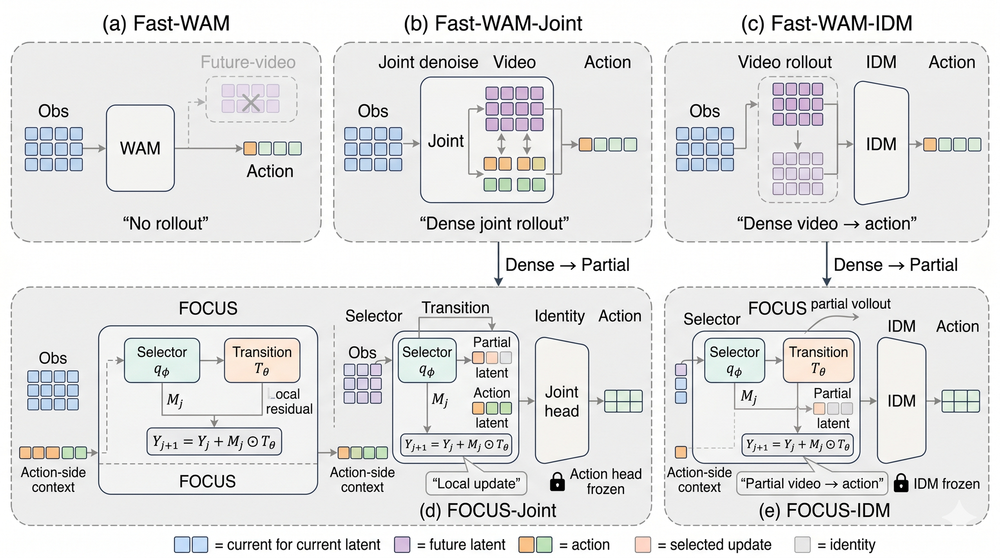
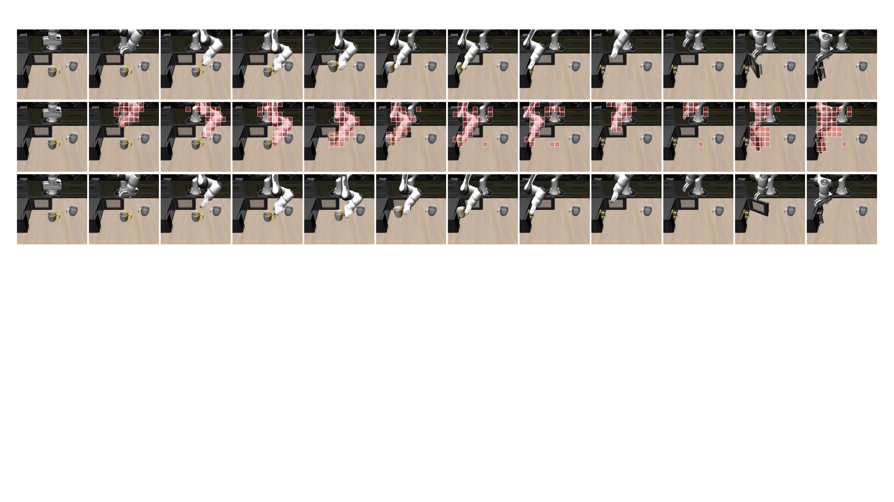
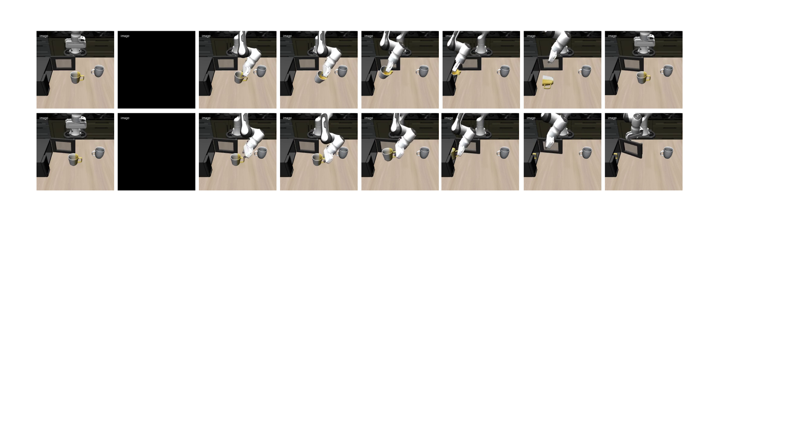
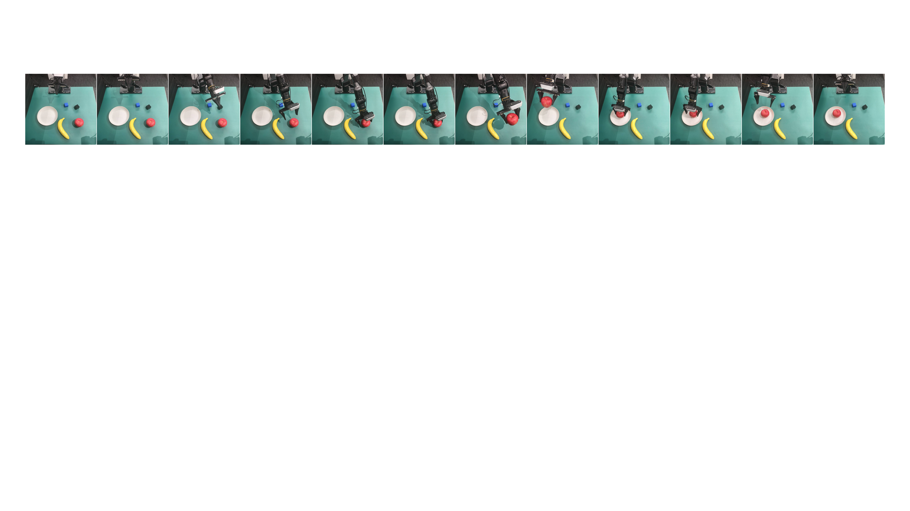

Select local support
The selector predicts a mask over latent tokens conditioned on the current action context. Its target is not generic saliency: a token must change under a dense teacher and be relevant under forward or inverse action dynamics.
World Action Models · Partial Rollout · Robot Control
FOCUS updates only the action-relevant local latent tokens during WAM rollout, carrying the rest of the scene through an identity path before action generation.

Video generation rewards full-scene future synthesis, but manipulation often depends on a smaller set of local variables: the gripper, contacted objects, target receptacles, and nearby geometry. Updating background tokens can add cost and inject future-latent changes that are irrelevant to the current decision.
FOCUS asks a narrower question than whether future imagination is useful: when a WAM performs latent rollout for control, should every token be updated, or only the parts the action can affect?

The selector predicts a mask over latent tokens conditioned on the current action context. Its target is not generic saliency: a token must change under a dense teacher and be relevant under forward or inverse action dynamics.
A learned transition head applies residual updates only on the selected support. Unselected tokens are preserved through an identity path rather than replaced by noise or mask tokens.
The partially rolled-out latent state is consumed by the original Fast-WAM-Joint or Fast-WAM-IDM action head, without behavior-cloning fine-tuning or a second action-refinement pass.
M* = D ∩ (F ∪ I)
D gates teacher latent change; F captures forward action sensitivity; I captures inverse action relevance.
FOCUS-Joint average success
FOCUS-IDM average success
FOCUS-Joint inference latency
FOCUS-IDM inference latency
| Method | Success Rate | Inference Latency | Completion Time |
|---|---|---|---|
| Fast-WAM | 96.8% | 0.38s | 19.51s |
| Fast-WAM-Joint | 93.0% | 0.66s | 30.02s |
| Fast-WAM-IDM | 92.3% | 0.95s | 38.63s |
| FOCUS-Joint | 96.4% | 0.45s | 32.04s |
| FOCUS-IDM | 96.8% | 0.68s | 23.86s |

We occlude the global camera from 1s to 4s while keeping all other settings fixed. The action-only path struggles after corruption because it has no future-video rollout, while high-latency dense IDM hurts closed-loop recovery. FOCUS combines useful future-latent rollout with lower inference cost.


The same observation-instruction-action interface is connected to a physical robot for an apple-to-plate manipulation task. The study verifies that partial rollout can run inside a hardware control loop, while larger-scale real-world testing remains future work.
@inproceedings{focus2026partialrollout,
title = {FOCUS: Action-Conditioned Partial Rollout for World Action Models},
author = {Anonymous Authors},
booktitle = {Advances in Neural Information Processing Systems},
year = {2026}
}